J o n a s  x  U n i t y
Als Medientechnik-Student mit Interesse an interaktiven Medien, kreativen Workflows und technischer Umsetzung suche ich ein spannendes Praxissemester.
Auf dieser Seite zeige ich einige meiner bisherigen Projekte – von ersten Unity-Prototypen bis hin zu 3D-Animation, Grafikdesign und Frontend-Entwicklung.
Ich möchte echte Erfahrungen sammeln, mich weiterentwickeln und freue mich darauf, mit Ihnen zusammenzuarbeiten.
âš ï¸ Diese Seite wird derzeit überarbeitet – Inhalte und Projekte werden laufend ergänzt.
🮠Projekt: Unity Fantasy Prototyp Privates Projekt
Status: Früher Prototyp, Work in Progress
Technologien: Unity, Visual Studio Code, C#, Scriptable Objects, Shader Graph, GitHub
Ziel: Erste Erfahrungen mit Game-Development sammeln – Gameplay-Mechaniken, UI, RPG-Systeme, Crafting & World-Interaktion
🖼️ Galerie: Screenshots & Features
Einblicke in verschiedene System-Elemente, UI-Komponenten und den Prototypen in Aktion:
 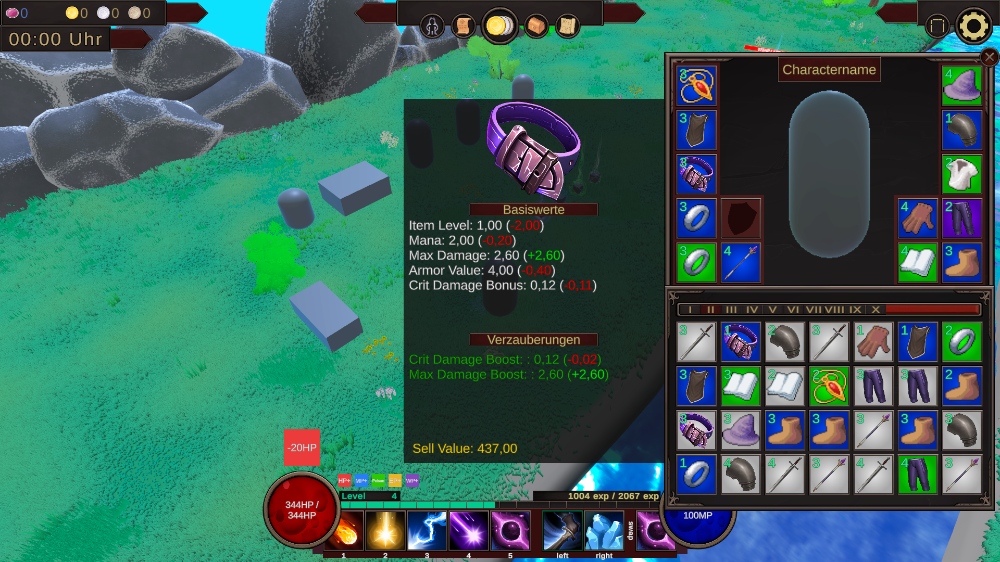
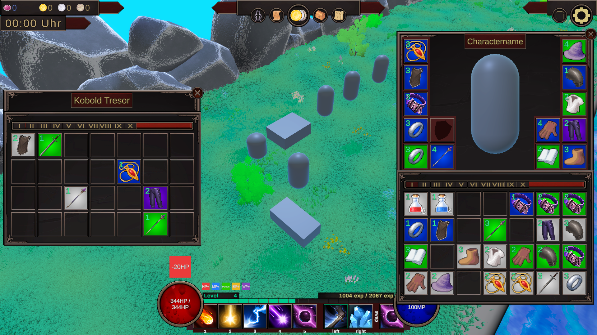
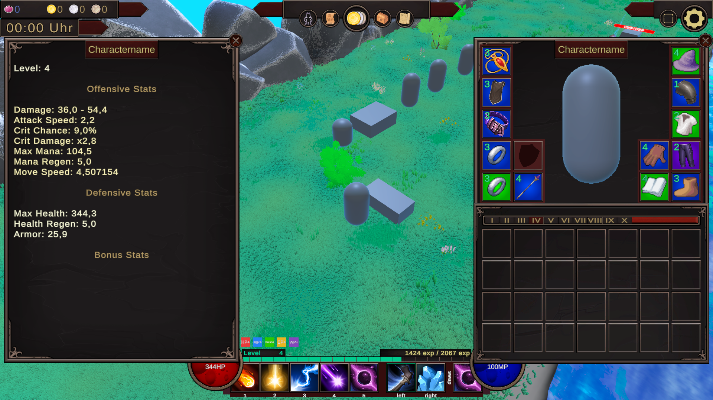
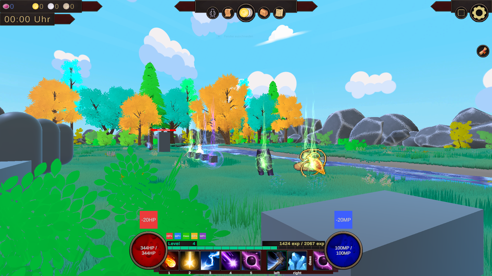
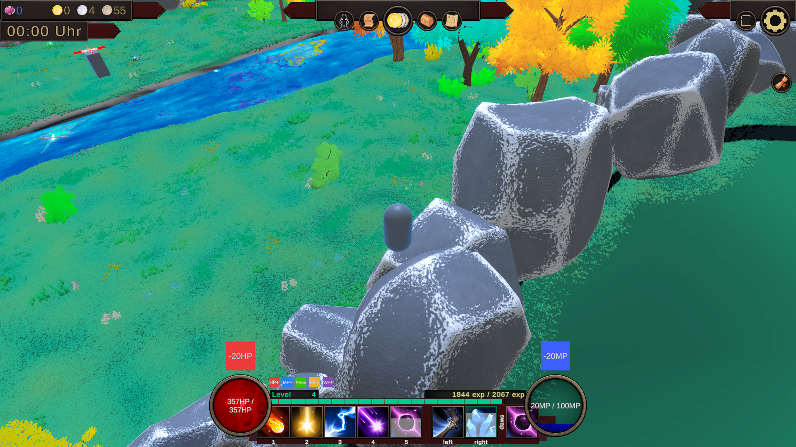
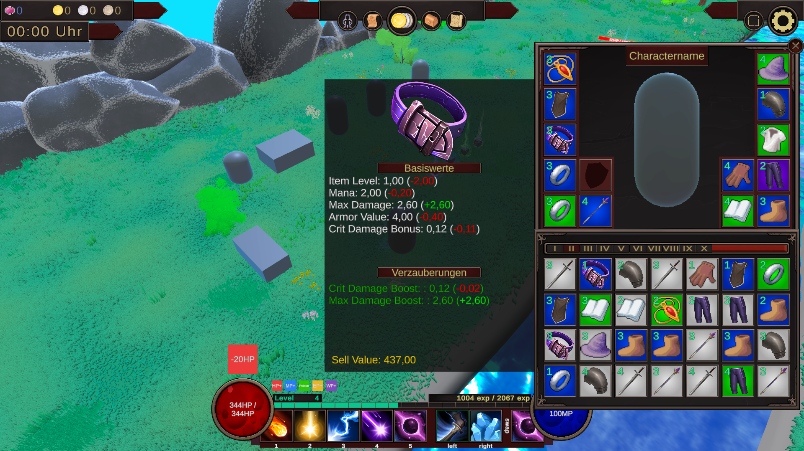
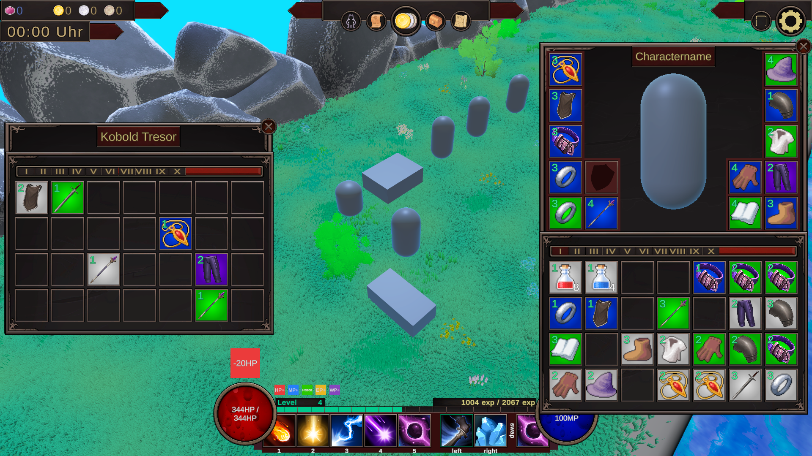
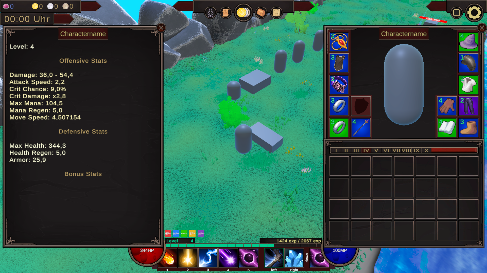
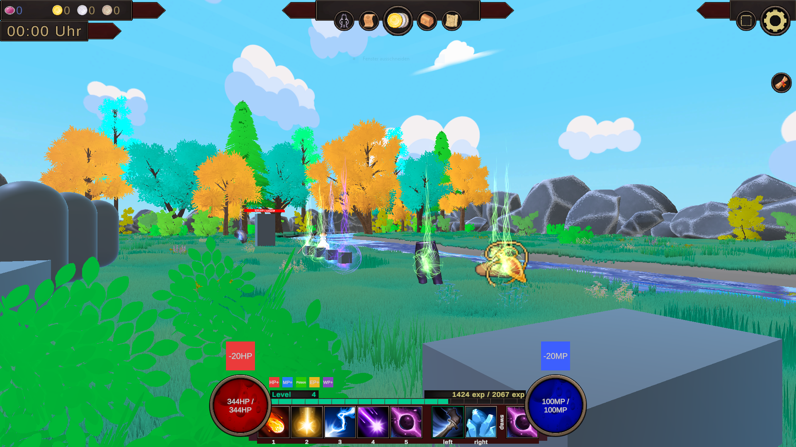
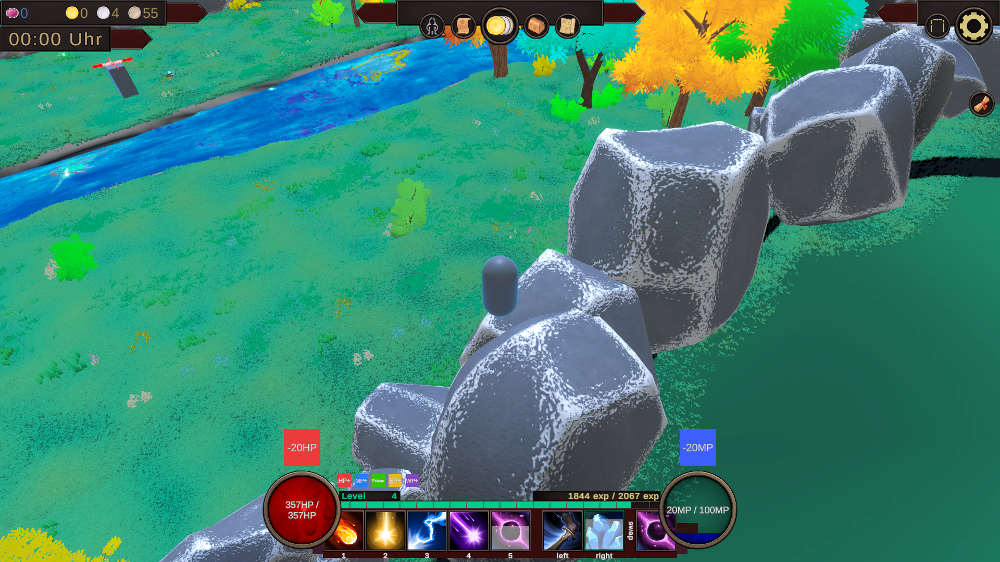

 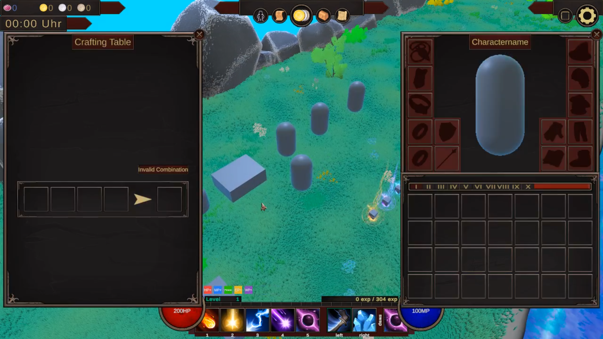
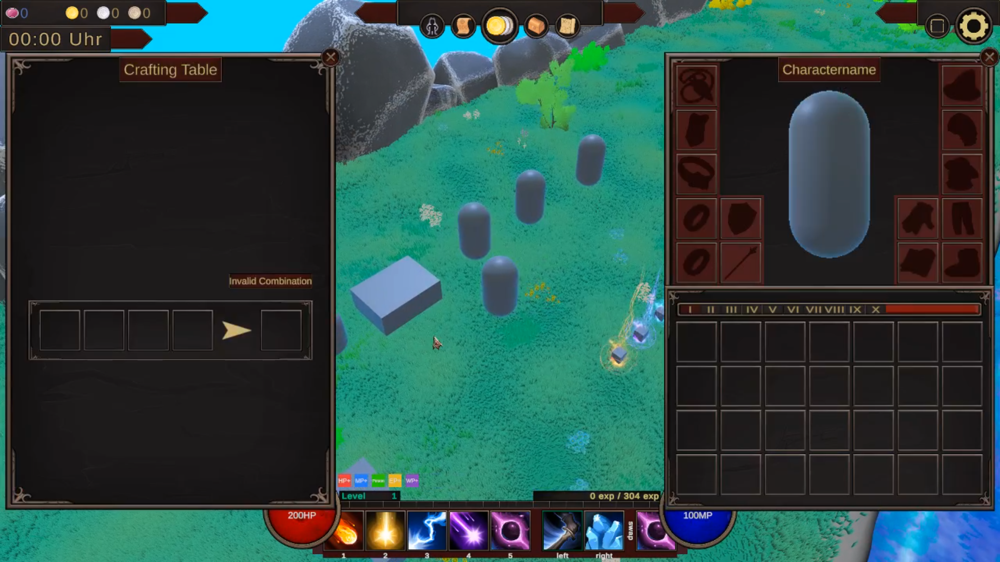

🯠Was ist meine Motivation?
Dieses Projekt entsteht aus persönlichem Interesse an Game Development. Es handelt sich um einen frühen Prototypen, inspiriert durch ein MMORPG, umgesetzt in Unity. Ich wollte herausfinden, was alles nötig ist, um ein kleines Fantasy-Game auf die Beine zu stellen. Mein Fokus lag dabei auf Asset Customization, Programmier-Übung, Feature-Tests und allgmeines Prototyping.
ğŸ› ï¸ Was ich umgesetzt habe
Trotz Prototyp-Status habe ich mehrere Spielsysteme entwickelt, die bereits grob miteinander funktionieren:
- 👤 Spielersteuerung & Kamera: PlayerController, CameraSwitcher, Input System
- ⚔️ Kampf & Gegner: Gegner-Spawn, einfache AI, Projectiles, Health & Damage-Popups
- 💠Inventory, Loot & Crafting: Item-System, LootManager, Crafting mit mehreren Slots
- 🌳 Interaktion & Worldbuilding: Interaktive Objekte wie NPCs, Werkbänke, Tresore
- 🧠UI & RPG-Systeme: Skill-Leiste, Tooltips, Healthbars, EXP-System
- ⏳ World Management: Tageszeit-System, CanvasManager, Feedback-Popups
🔠Was ich gelernt habe
- Grundlegender praktischer Umgang mit Unity
- Design und Aufbau eines RPG-ähnlichen Systems (Inventar, Skills, EXP, Ansätze von Interaktion)
- Shader Graph genutzt, um erste visuelle Effekte selbst zu gestalten (Loot: Rarity-Effekt)
- UI-Design im Spielkontext – vom Tooltip bis zur dynamischen Skill-Leiste
- Datenfluss im Spiel verstehen: Wie Info zwischen Scripts, Objekten, UI und Spieler fließt.
- Geduld mit mir selbst: Der Prozess ist chaotisch – und das ist okay.
- „Done is better than perfect“: Lieber erstmal etwas Funktionierendes als perfekte Architektur.
Mir ist bewusst, dass der Prototyp noch nicht rund läuft oder „feature complete“ ist – aber genau das ist für mich der Sinn dieses Projekts: lernen, testen, verbessern. Ich freue mich darauf, auf diesem Fundament weiter aufzubauen und mich Stück für Stück zu verbessern.
📈 Was würde ich als Nächstes tun?
- Game-Loop entwickeln (Ziel, Fortschritt, Save-System, Missionen/Aufgaben/Quests)
- UI-Feinschliff, Audio, SFX, VFX (evtl. Animationen, NPC-Models adden)
- RPG-Systeme und Crafting-Systeme verbessern (Characterauswahl, Skilltree, NPC-Interaktionen, evtl. Crafting-Rezepte)
- Mehr Polishing für Gameplay-Feedback (Popups, Feedback-Panels)
- Hauptmenü Screen und weitere Szenen erstellen
- Allgemeines Bugfixing und Fehlerbehebung (im Gameplay und UI)
- Code Refactoring und Modularisierung (bessere Wartung und Erweiterbarkeit)